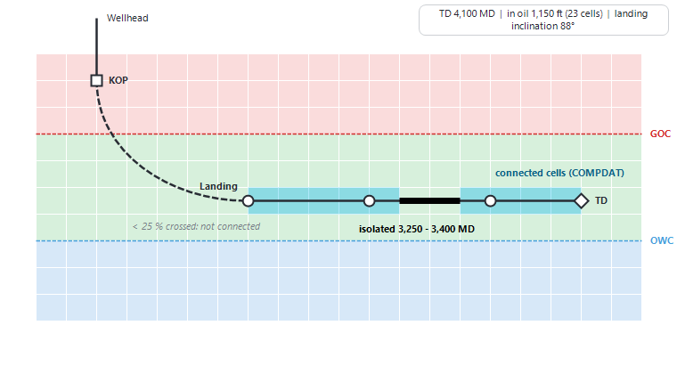

|
Simulation deck builder (3D model builder)
1. Overview
The deck builder builds a 3D reservoir model for the selected scenario and writes it as an ECLIPSE-format simulation deck (.DATA). It runs the deck with OPM Flow, reads the results back into Precept as forecast profiles, and shows the model in 3D. The same deck is used by the coupled forecast (see Network - reservoir simulator coupling) and by the uncertainty studies (see Experimental design).
It works in two ways, chosen in the "Model" list at the top left:
•"Conceptual model" — Precept builds the whole deck: grid, rock and fluid properties, initial conditions, wells and SCHEDULE (sections 4 to 8).
•"Existing model" — you already have a model (for example from Petrel): Precept writes only its forecast part — well openings and closures, drilling dates, well controls, and the completions of new wells on your grid (section 9).
2. Opening the deck builder
1.In Settings, "Pre / Post Processing" box, tick "3D Simulation model". This shows the "3D Modelling" group on the main ribbon. The list under the tick box ("ECLIPSE 100", "ECLIPSE 300", "Intersect IX") sets the format of the forecast written for an existing model.
2.Select the scenario in the main window.
3.Click "3D model builder" in the "3D Modelling" group. The window "Reservoir Simulation - Deck Builder" opens full screen.
The same group has "Eclipse Well Control" (each well's control mode and targets written in the SCHEDULE — the same editor as "Well control" in the SCHEDULE section) and "3D model visualization" (the 3D viewer on the scenario's latest simulation results, see 3D visualiser).
3. The window
•Left: "Model" ("Conceptual model" / "Existing model"), "Study" ("Deterministic" / "Probabilistic" / "Experimental design"), then the "Deck sections" list. Click a section to edit it.
•Middle: the editor of the selected section.
•Right: "Produced ECLIPSE deck (.DATA)" — the deck, updated live as you edit, with line numbers; the keyword of the selected section is highlighted. It is read-only (use "Edit .DATA" to hand-edit). The ✕ button hides the pane; it comes back when you open another section. When the ECLIPSE reference manual is available on the PC, a help strip under the deck explains the value under the mouse ("Item n: ...", options, units, default).
•Bottom bar: the actions below.
|
Button
|
What it does
|
|
Run settings
|
How the simulator is launched, the scenario's Simulation folder, the simulator manual, and the coupled-forecast settings (section 3.1).
|
|
Generate .DATA
|
Builds the deck from the inputs and writes it to the Simulation folder (section 6). On an existing model: "Generate SCHEDULE and save DATA file".
|
|
Edit .DATA
|
Opens the deck in a separate editor ("Edit - <file>"). "Save" or Ctrl+S writes it. Conceptual model only.
|
|
Run Deterministic
|
Runs the deck with OPM Flow (section 7). Conceptual model only.
|
|
Run probabilistic / Experimental design
|
The study's button, shown for the Probabilistic and Experimental design studies. On an existing model: "Generate probabilistic DATA files" / "Generate experimental design DATA files". See Experimental design.
|
|
Load results
|
Reads the run's results into the scenario's forecast (section 8).
|
|
3D model
|
Opens the 3D viewer on the scenario's latest simulation grid and results.
|
|
Charts
|
Opens the scenario's forecast results charts.
|
|
Prob dashboard
|
Reopens the dashboard of the last probabilistic run. Shown only once a probabilistic run has produced results.
|
Below the deck sections, "PRT" shows the run report of the last run (Ctrl+F to search, with "Next" / "Prev"), and "MANUAL" shows the simulator reference manual: the ECLIPSE HTML manual when it is installed (with MANUAL open, click a keyword in the deck to open its page), otherwise a PDF manual such as the OPM Flow one.
Your inputs are saved per scenario when you generate the deck and when you close the window.
3.1 Run settings — do this first
Click "Run settings" (bottom left). The window "Run settings - simulator command" has:
•"Local WSL (wsl.exe -> flow)" — the default: OPM Flow runs in WSL on this PC. Or "Custom command (remote host / x86 box / cloud)" — a command run through cmd /c, with the placeholders {wsldir} {dir} {wsldeck} {deck} {deckname}. It must leave <deck name>.RSM in the deck folder so that "Load results" can read it. This choice is saved for the PC, not per scenario.
•"Simulation folder (blank = app folder):" — where the deck and all the simulation results of this scenario go ("..." to browse). A folder is required: without one, "Generate .DATA" and "Run Deterministic" stop with "No Simulation folder is set for this scenario.".
•"Simulator manual (ECLIPSE install folder, e.g. C:\ecl, or a manual PDF):" — optional; "Folder..." or "PDF...". Used by the MANUAL section and the help strip.
•"Coupled forecast (Settings > Decline = Simulation):" — "Max passes per timestep:" and "Rate tolerance (%):", see coupling.
Click "Save". The folder and the coupling settings are stored per scenario.
4. Conceptual model — the deck sections
The sections follow the order of an ECLIPSE deck: RUNSPEC, GRID, PROPS - PVT, PROPS - SCAL, SOLUTION, SUMMARY, SCHEDULE. The deck builder opens on GRID.
4.1 RUNSPEC
Written automatically: the dimensions come from GRID; the phases are oil, gas, water and dissolved gas; the deck units are FIELD for an oilfield asset and METRIC for a metric one; the START date is the scenario's forecast start.
4.2 GRID
Choose the "Method":
•"Box model" — a regular box of NX × NY × NZ cells with a flat top.
•"Isoclines map" — a structured (corner-point) grid whose top surface is interpolated from depth contours you digitise on a structure-map image (section 4.3).
•"Import grid file" — pick a grid file (.GRDECL, .inc, .grid): it is copied to the Simulation folder and included in the deck as it is. If you cancel the file choice, the method goes back to "Box model".
|
Input
|
Meaning
|
|
Cells in X (NX), Cells in Y (NY), Layers (NZ)
|
Number of cells in each direction.
|
|
Cell size DX, Cell size DY
|
Cell size in the asset's length unit. Derived from the model area (and hidden) with "Isoclines map".
|
|
DZ per layer (;)
|
Thickness of each layer, separated by semicolons (e.g. 20;30;50). The last value is used for any further layer.
|
|
Top depth
|
Depth (TVDSS) of the top of the box. Derived from the contours with "Isoclines map".
|
|
Porosity, Permeability kh (mD), kv/kh ratio
|
Uniform rock properties of every cell. Vertical permeability = kh × kv/kh. Right-click one of them to make it uncertain ("Make uncertain / edit…", Probabilistic and Experimental design studies).
|
The "3D preview" on the right redraws the grid as you type.
4.3 Building a grid from a structure map ("Isoclines map")
1."Load map" — load the structure-map image (png, jpg, bmp).
2."Set corners" — click the map's top-left corner, then its bottom-right corner, and type their coordinates in "TL X", "TL Y", "BR X", "BR Y". UTM easting / northing (metres) or latitude / longitude in degrees both work; degrees are converted when the grid is built.
3."Draw isocline" — enter the contour's depth (TVDSS), click its points on the map, then "Close isocline and save". Repeat for each contour (at least 3 points each). The contours are listed under "Isoclines (TVDSS)"; "Delete isocline" (or the Del key) removes the selected one.
4."Draw model area" — press at one corner of the model, drag and release at the opposite corner. The grid fills this rectangle: DX = width / NX, DY = height / NY. Without a model area the grid covers the contours plus a margin.
5."Build grid" — interpolates the top surface from the contours and writes the corner-point geometry file MODEL_GRID.GRDECL to the Simulation folder; the deck includes it. The layers follow the top surface with the DZ thicknesses.
"+", "-" and "Fit" zoom the map; "Show map" shows or hides the image. A status line under the map says what to do next. On an isoclines grid, the map position of each placed well is written back to the well's X / Y in the network (one way: moving a well on the map in the deck builder updates the network, not the other way round).
4.4 PROPS - PVT
A black-oil PVT generated from correlations, for this scenario's model (independent of the Material Balance PVT):
•"Pb, Rs, Bo correlation": Glaso (default) or Standing.
•"Oil gravity (°API)", "Gas gravity (air = 1)", "Solution GOR Rs", "Reservoir temp", "Water salinity (ppm)", "Pressure min", "Pressure max" — in the asset's units.
•"Generate PVT" regenerates the table (it is also regenerated when you leave a field). The table shows pressure, bubble point, GOR, oil / gas / water density, viscosity, formation volume factor and compressibility, and Z. It is written to the deck as PVTO, PVDG, PVTW and DENSITY.
4.5 PROPS - SCAL
Two relative-permeability tables, each with its chart: "Water / oil rel-perm (SWOF)" (Sw, Krw, Kro) and "Gas / oil rel-perm (SGOF)" (Sg, Krg, Kro). Use "+" / "−" to add or remove a point, edit the values in the table, or drag the points on the chart. The first (connate) point can only move vertically.
4.6 SOLUTION
The initial equilibrium (EQUIL): "Datum depth (TVDSS)", "Initial pressure at datum", "Gas-oil contact GOC (TVDSS)" and "Oil-water contact OWC (TVDSS)", in the asset's units (pressure in gauge). The "3D preview - OWC (blue) / GOC (red)" shows the contacts on the grid. The initial pressure and the contacts can be made uncertain by right-click. The deck also asks the simulator to report the initial oil and gas in place and to save the 3D results monthly, for the 3D viewer.
4.7 SUMMARY
A default set of field and well results (rates, cumulatives, water cut, GOR, gas-lift, THP, BHP, pressure around each well, injection, oil and gas in place) — what Precept reads back with "Load results". Nothing to enter.
4.8 SCHEDULE
The SCHEDULE is written from the scenario's own forecast inputs when you click "Generate .DATA". The section gives access to the editors it uses:
|
Button
|
Opens
|
|
COMPDAT
|
The WELLS view: place the wells on the grid and draw their trajectories (section 5).
|
|
VLP - well completion
|
Set Well Geometry: well completions and VLP generation (see Material Balance, sections 4 and 5).
|
|
Well control
|
Each well's control mode and targets (oil, water, gas, liquid, reservoir-fluid, BHP, THP), VFP table and artificial-lift quantity; injectors' type, control mode and targets.
|
|
Shutdowns
|
Planned shutdowns (see Shutdowns). In the deck, a maintenance shut-in closes the well (SHUT).
|
|
Constraints vs time
|
Time-varying constraints (see Constraints changes vs time).
|
|
Conversions / new profiles
|
Well conversions and new profiles (see Well conversion).
|
|
Link VLP files
|
Pick one or more VLP / VFP files (.vfp, .ecl, .inc, .txt); each is included at the top of the SCHEDULE so the wells can use their tables. The label lists the linked files; right-click it to clear the list.
|
The wells of the deck are the wells of the scenario's network, with the same names. In the deck the injected gas does not re-dissolve into the oil.
5. WELLS — placing wells and drawing trajectories
Click "COMPDAT" in the SCHEDULE section. The view shows the "Wells" list on the left and three views: the top view of the grid (top left), the structure map (top right, isoclines grid only) and a cross-section (bottom). In every view the mouse wheel zooms, dragging empty space pans and a double-click fits the view.
5.1 Placing a well
•Wells not yet placed are grey, parked along the first rows of the grid. Drag a well onto the top view (or the structure map) to place it; its cell I, J follows from its X, Y. Placed wells are coloured by type: green oil, red gas, blue water.
•Click a well (or select it in the list) to see its details in the top-right corner of the cross-section.
•Right-click a well to choose "Vertical well", "Deviated well" or "Horizontal well".
5.2 Vertical wells
A vertical well is perforated from a top layer K1 to a bottom layer K2 under its wellhead. Set them with right-click > "Top / bottom layer (K1, K2) ..." (dialog "Perforated layers - <well>"), or drag the two square handles on the cross-section; they snap to the layer boundaries.
5.3 Deviated and horizontal wells
A deviated or horizontal well is a true 3D path: vertical from the wellhead to the kick-off point (KOP), a smooth build to the landing point, then a smooth curve through its control points to TD. A new horizontal well lands at mid-reservoir with a level drain; a new deviated well crosses the reservoir from near its top to near its base. Both start towards the east.
•Number of points: right-click the well > "Trajectory points" > 2 to 12. The points are spread along the current path, keeping its shape.
•Top view: drag a control point to move it in X / Y (TD is the diamond); drag the wellhead to move the whole well. The build section is dashed and the drain thick.
•Cross-section: for a deviated well it is a curtain along the well's path. Drag "KOP" up or down; drag a point up / down to change its depth, or sideways to slide it along the well; drag the well line to move the whole drain up or down.
•Right-click a point > "Remove this point" (not below 2 points); right-click the path > "Add a point here" (after the landing point, up to 12 points).
•The title line gives TD (MD), the length in the grid and in the oil zone, the number of cells crossed, the landing inclination and the build rate (°/100 ft or °/30 m). Hovering over the path shows the MD, TVDSS and the cell I, J, K.

Figure 1 — A deviated well in the cross-section: KOP, build, landing point, control points and TD, an isolated interval (black) and the connected cells (blue).
5.4 Isolated intervals
An isolated interval is a stretch of the wellbore that does not produce or inject (packer, blank pipe). It is drawn black, with a handle at each end.
•Create: right-click the well on the cross-section > "Isolate an interval ...". The dialog "Isolated interval - <well>" is pre-filled around the click: adjust "From MD" and "To MD" and click "OK".
•Edit: drag an end handle, drag the interval to slide it, or right-click > "Edit this interval ...".
•Remove: right-click > "Remove isolated interval (...)".
5.5 Connections written to the deck (COMPDAT)
The well records (WELSPECS, COMPDAT) are regenerated each time you click "Generate .DATA", so they always match the current grid:
•A vertical well: its layers K1 to K2 (one record per layer when it has isolated intervals).
•A deviated or horizontal well: one connection per grid cell crossed, with the direction (X, Y or Z) along which it crosses the largest share of the cell. A cell crossed over less than a quarter of its size is not connected. The connected stretches are drawn in Precept blue on the cross-section.
•A cell (or layer) that is less than half open because of an isolated interval is written shut, so it can be re-opened later.
•The connection factors are left to the simulator, which computes them from the cell's permeability and size — so they follow any change of permeability, for example in a probabilistic run. The wellbore diameter is 8.5 in (0.216 m), skin 0.
The cross-section can show the fluid zones, the grid and the contacts ("Show fluids", "Show grid", "Show GOC", "Show OWC"); "Vertical exaggeration" sets its vertical scale (Auto fills the panel).
6. Generate .DATA
Click "Generate .DATA". If no VLP file is linked, Precept warns that wells on THP control need VFP tables ("Generate the deck anyway?"). The progress window "Generating .DATA" shows the stages:
1."Saving inputs ..."
2."Placing wells on the grid (COMPDAT) ..."
3."Building the SCHEDULE ..."
4."Writing <scenario>.DATA ..."
The deck is written to the Simulation folder as <scenario>.DATA (characters other than letters, digits, - and _ become _), and always overwrites the previous one — including hand edits made with "Edit .DATA". To keep a hand-edited deck, run it without generating again.
7. Running OPM Flow — "Run Deterministic"
"Run Deterministic" runs the deck that is on disk, as it is — it never regenerates it. If there is no deck yet, Precept asks you to click "Generate .DATA" first. If OPM Flow cannot be found in WSL, the window "Precept - OPM Flow setup" gives the one-time installation steps (see Reservoir simulation, requirements).
The window "Run simulation - <scenario>" streams the simulator's output live. At the end its status reads "Simulation finished. Click 'Load results' to import the profiles." or "Simulation exited with code N - check the log.". When the error names a line of the deck, "Show error line" highlights it in red in the deck pane. Closing the window stops the run. The full run report is in the "PRT" section.
8. Load results, charts and 3D
1.Click "Load results" (in the run window or the bottom bar).
2.In "Load simulation results", choose the forecast case to write into: "Low", "Mid" (default) or "High", then "Load".
3.The progress window "Saving simulation results" names each well. A summary lists every well loaded and its number of time steps.
Each well's simulated rates are saved as the scenario's forecast and as its decline curves (potentials) for the chosen case, with its THP, BHP and reservoir pressure; the field total is saved with the field pressure. The initial oil and gas in place are saved as the case's hydrocarbon in place (Low = 1P, Mid = 2P, High = 3P). Then click "Charts" for the profiles, or "3D model" for the 3D viewer (pressure and saturations over time).
9. Existing model
Choose "Existing model" in "Model". Your model (grid, properties, fluids, history) stays as it is; Precept writes only the forecast part, in the format chosen in Settings (ECLIPSE 100, ECLIPSE 300 or Intersect IX). The sections become "EXISTING MODEL" and, in the Deterministic study, "SCHEDULE".
•EXISTING MODEL: "Simulation deck" — "Browse..." to your .DATA (or Intersect .afi). Its grid is read from the deck (from its last run's grid file next to it, or from its GRID section); a line shows the grid size, active cells and extent, or why it could not be read. "Compare with another deck..." shows two decks side by side with the differences highlighted. The SCHEDULE is generated from the scenario's forecast start.
•The right pane becomes "Your deck (.DATA)": you can edit it in place (Ctrl+S saves; the original is kept once as <deck>.DATA.bak). Right-click a line > "Include a file here..." inserts INCLUDE statements; double-click an INCLUDE line to open that file.
•SCHEDULE: the same editors as in section 4.8; new wells are placed and drawn on your own grid (section 5), and their connections are computed on your cells.
•"Generate SCHEDULE and save DATA file" writes the forecast into your deck, between the markers "-- ==== Precept forecast - BEGIN ..." and "-- ==== Precept forecast - END ====". Edit your deck above or below this block, not inside it: it is rewritten each time. You run the deck on your own cluster; "Run Deterministic" is not offered for an existing model.
10. Files in the Simulation folder
|
File
|
Content
|
|
<scenario>.DATA
|
The deck (conceptual model).
|
|
MODEL_GRID.GRDECL
|
The corner-point geometry of an isoclines grid, included by the deck.
|
|
<scenario>.RSM, .PRT, .EGRID, .INIT, .UNRST
|
The run's outputs: summary read by "Load results", run report, grid, initial properties and 3D results.
|
|
mc\real_nnn, ed\run_nnn
|
Probabilistic realizations and experimental-design runs (see Experimental design).
|
|
<scenario>_COUPLED.DATA, COUPLING_LOG.txt
|
Written by a coupled forecast (see coupling).
|
|